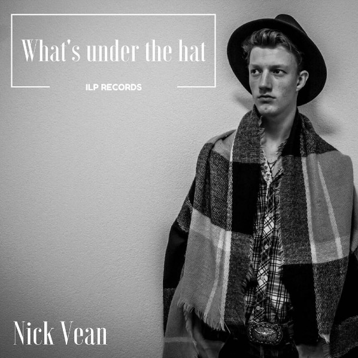

Vleppyie Auwurs - TBA
Taxibotsing (&Bromet, KRO/NCRV)
Man in de knoop (&Bromet, KRO/NCRV)
Kim Young Ones - Circus
Nick Vean - What's under the hat
De film die nooit afkwam (&Bromet, EO)
Joëlle Nagtegaal - Addicted To You
Koppie Koppie - Biri Koud
Sarina & co - Live @ peggy51
Kind Like Cow - Kind Like Cow
Vleppyie Auwurs - Lofzang op Laura
Nee heb je (&Bromet, KRO/NCRV)
De dokter onder vuur (&Bromet, KRO/NCRV)
Zelfvoorzienend met behoud van comfort (&Bromet, KRO/NCRV)
Welcome home (&Bromet, Selfmade Films)
In een klap (&Bromet, KRO/NCRV)
Sherry Amber - Ride it up
Doe-het-zelf zorg (&Bromet, KRO/NCRV)
Je leven als wethouder (&Bromet)
Mijn recht, jouw recht (&Bromet)
Mont Ventoux: Huis aan het water
Brandend verlangen (&Bromet, KRO/NCRV)
Homopesten (&Bromet, KRO/NCRV)
Veelbelovend! (&Bromet, KRO/NCRV)
Pratende planten & ochtendurine (&Bromet, NCRV)
Bezem door de wallen (&Bromet, NCRV)
Our lively recording and post-production studio opened in 2012.
Conveniently located in the countryside, minutes north of Amsterdam, we combine a great sounding 70 m2 room with state-of-the-art analog gear and digital processing power.
Our small crew also specializes in stage and field production using portable multi-tracks setups.
We're used to operating in demanding conditions and experienced with techniques from lavaliers to M-S stereo booming.
We can assist you in planning the recording, making sure you get world class sounds, all the way to finalizing the post-production to standard media production norms such as EBU R128 or Spotify/YouTube/Vimeo.
We maintain a growing body of publishing deals with creators, media producers and music and entertainment labels. A lot of the music and soundtracks we facilitate are available for licensing, depending on prior agreements.
Our extensive experience with clients on all kinds of 'sound stages' enables us to deliver efficiently and with the highest quality in any creative or artistic endeavour.
©2017 ILP Records - +31(6)13431583 - De Noord 4a, 1452 PS, Ilpendam